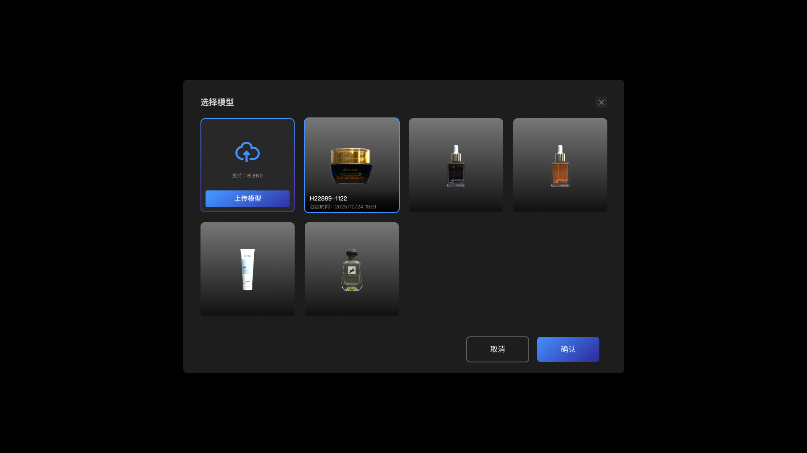
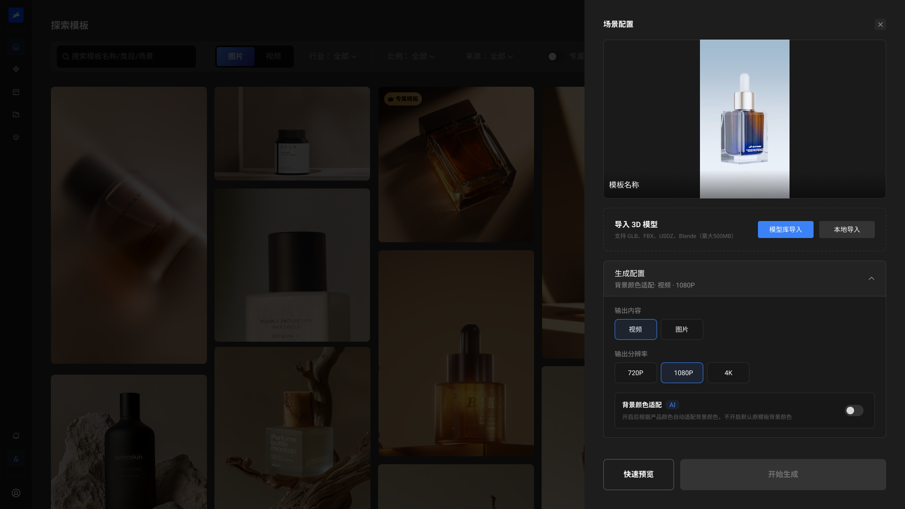

在 Figma 中完成核心流程、组件与基础设计规范。
01 / B.THREE AI CONTENT PLATFORM
B.THREE
AI 商品内容平台
从 0 到 1。
B.THREE 是面向品牌方与电商内容团队的 B 端 AI 商品内容生产平台。我负责把商品模型、内容模板、AI 生成与项目交付组织成可用的生产链路，并在后期迭代中引入 AI 协助需求整理、流程推演、UI 探索与前端验证。
先了解这个项目 ↓02 / PROJECT OVERVIEW
一套面向品牌内容团队的 B 端 AI 生产平台。
B.THREE 是面向品牌方、电商内容团队与平台服务人员的 B 端 AI 商品内容平台。用户上传已有 3D 模型；没有模型时可预约扫描服务，获得模型后选择专属模板，生成图片、关键帧与视频，并将结果沉淀为项目资产。
- 项目类型
- B 端 AI 商品内容生产平台
- 服务对象
- 品牌方｜电商内容团队｜平台服务人员
- 项目阶段
- 从 0 到 1｜正式上线｜持续迭代
- 我的职责
- 产品体验｜UI 视觉｜设计规范｜前端验证
打通模型准备、模板选择、内容生成与项目资产管理。
在后期迭代中用既有规范约束需求、流程、UI 与文案推演。
通过 Codex 验证真实页面，由我评审、修正并完成开发交付。
03 / PRODUCT CHALLENGES
平台真正需要解决的，是商品一致性与规模化交付。
品牌客户并不关心底层 AI 与 3D 技术如何运行，他们需要在不同模型条件下开始任务，稳定保持商品一致性，并能够管理生成过程与最终交付。
商品模型来源不同
已有模型的客户可以直接上传，没有模型的客户则需要预约扫描；两种起点最终必须汇入同一条内容生产路径。
商品一致性难控制
图片、关键帧和视频需要围绕同一商品模型持续生成，避免外形、材质与品牌特征在不同内容中发生漂移。
专业参数难理解
模型、模板、渲染、打光和 AI 适配需要转换成品牌客户能够判断的业务选项，而不是暴露复杂技术参数。
生成结果不等于交付
团队还需要管理文件夹、任务状态、失败结果、输出规格和交付版本，让一次生成沉淀为可复用项目资产。
设计目标：先固定商品主体，再把模板与生成能力转化为可判断的操作，最后让所有结果回到可管理、可复用的项目资产。
04 / WHY AI & WORKING METHOD
AI 加速产品迭代推演验证更高效
AI 在产品后期迭代中进入：此时已有真实业务、Figma 规范和开发约束。我的方法是先提供上下文，再让 AI 参与整理与探索，由我收敛方案，最后进入真实前端验证。

责任边界AI 负责加速整理、推演与实现；我负责业务判断、体验取舍、规范一致性、评审和最终交付。
05 / KEY PRODUCT DECISIONS
两项关键判断，确定了模型入口与生成配置。
这里关注我做出的产品判断：为什么这样组织流程、舍弃了什么，以及最终如何降低理解和交付成本。


DECISION 01 / MODEL ENTRY
模型准备统一为上传与扫描两种入口
- 原始问题
- 不同客户拥有不同模型条件，流程容易在入口处分裂。
- 我的判断
- 只询问“是否已有可用模型”，将上传和扫描视为两种准备方式。
- 产生价值
- 模型准备完成后统一进入商品资产，后续模板与生成流程不再分叉。

输出类型分辨率商品模型颜色适配
将底层 AI、渲染与打光能力转译为用户能够直接判断的配置项
DECISION 02 / GENERATION CONFIG
专业生成参数被转化为用户可判断的业务选项
- 原始问题
- AI、渲染和打光参数专业度高，品牌客户难以理解。
- 我的判断
- 围绕输出类型、分辨率、商品模型和颜色适配重新组织配置。
- 产生价值
- 用户在生成前即可检查关键条件，减少不可控结果和重复沟通。
06 / DELIVERED PRODUCT FLOW
最终产品形成了一条五步交付链路。
用户只有两个模型起点：上传已有 3D 模型；没有模型时预约扫描服务。模型准备完成后，再进入模板、生成与项目资产环节。
设计决策将内容入口与模型准备放在同一工作台，但始终以可用的商品模型作为稳定生成的前提。
07 / AI DESIGN EVIDENCE
AI 输出经过判断与修正后进入真实交付。
以下证据基于真实交付过程复盘整理，聚焦输入依据、流程判断、人工修正与前端验证。
展示组件、状态、业务对象和关键约束如何成为共同输入。
用结构图还原模型上传、扫描服务与异常分支的梳理结果。
用流程对比图呈现备选方案、取舍依据与最终可交付路径。
展示 AI 初稿的问题、修改标注与规范化后的最终界面。
展示完整页面、响应式状态和前端验证结果。
08 / DESIGN CONTEXT & HANDOFF
既有 Figma 规范成为 AI 协作与开发验收的共同依据。
已经验证过的品牌色、排版、组件、状态、业务对象与开发约束共同限制 AI 输出，也成为设计评审与前端验收的依据。
向 AI 明确近黑工具界面、品牌蓝操作焦点、语义状态色和对比度规则，限制视觉输出的基本方向。
符合规范需要修正前端已验证
业务完整状态完整组件复用响应式可开发性
把真实组件和状态作为 AI 的参考边界，避免新方案脱离已有产品语言。

先向 AI 说明业务对象及其关系，再让它参与流程与页面方案推演。
09 / DELIVERY & REFLECTION
平台正式上线，并进入百雀羚真实项目。
- 01
完成正式上线与开发交付
B.THREE 已完成开发交付并正式上线，核心链路覆盖模型准备、模板选择、内容生成和项目资产沉淀。
- 02
进入真实客户项目
平台已用于百雀羚的真实品牌项目，设计方案从内部验证进入实际商品内容生产场景。
- 03
显著提升迭代效率
Gemini、Figma AI 与 Codex 缩短了需求整理、方案探索和前端验证所需时间，让问题更早被发现，也减少了重复沟通与返工。
- 04
设计师负责最终判断
业务规则、体验取舍、规范一致性和验收标准仍由我控制。AI 提升执行效率，但不替代产品设计中的关键决策。
VALUE MODEL / 10S PRODUCT MOTION
一支 10 秒商品动效的效率账
以下按已有商品 3D 模型、需完成策划、画面制作与两轮修改的常规项目估算，用于说明流程差异，不代表百雀羚的财务披露或固定报价。
包含创意与分镜、摄影棚和灯光、拍摄团队、道具准备、剪辑合成及修改沟通。
复用商品模型和品牌模板，集中完成场景配置、AI 生成、结果审核、修改与版本交付。
- 制作周期
- 约缩短 70%
- 制作成本
- 约减少 75%
- 持续价值
- 模型与模板可继续复用
测算方法：以传统制作中位值 10 天 / 6 万元，对比平台链路中位值 3 天 / 1.5 万元；实际结果会随画面复杂度、模型准备情况和修改轮次变化。